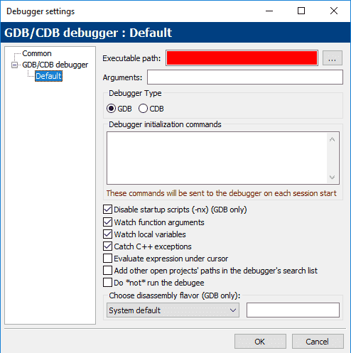
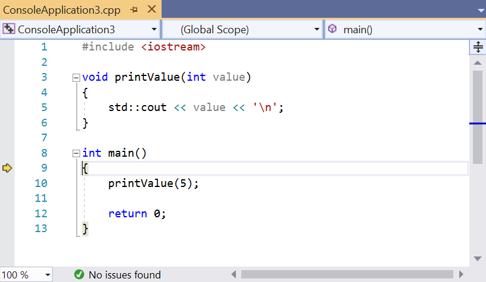
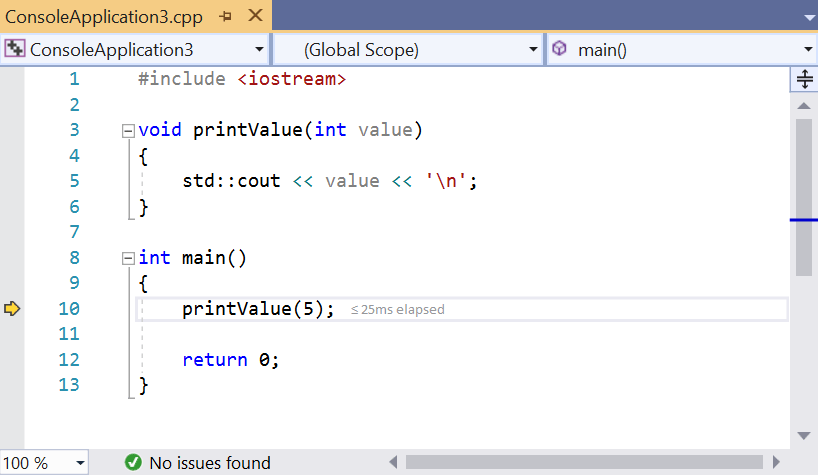
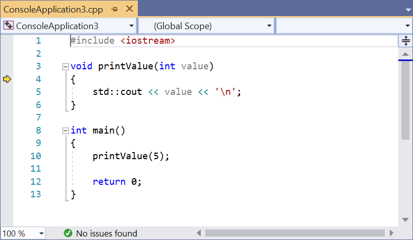
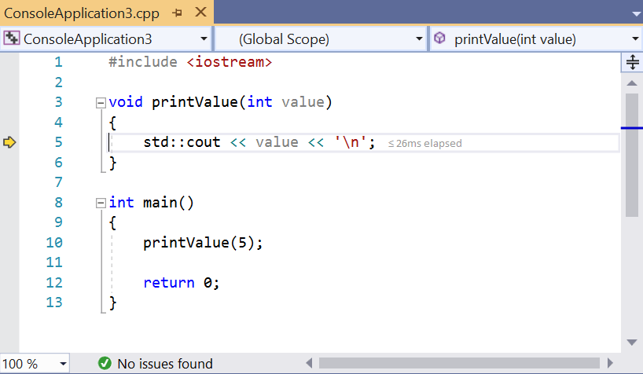

When you run your program, execution begins at the top of the main function, and then proceeds sequentially statement by statement, until the program ends. At any point in time while your program is running, the program is keeping track of a lot of things: the value of the variables you’re using, which functions have been called (so that when those functions return, the program will know where to go back to), and the current point of execution within the program (so it knows which statement to execute next). All of this tracked information is called your program state (or just state, for short).
In previous lessons, we explored various ways to alter your code to help with debugging, including printing diagnostic information or using a logger. These are simple methods for examining the state of a program while it is running. Although these can be effective if used properly, they still have downsides: they require altering your code, which takes time and can introduce new bugs, and they clutter your code, making the existing code harder to understand.
Behind the techniques we’ve shown so far is an unstated assumption: that once we run the code, it will run to completion (only pausing to accept input) with no opportunity for us to intervene and inspect the results of the program at whatever point we want.
However, what if we were able to remove this assumption? Fortunately, most modern IDEs come with an integrated tool called a debugger that is designed to do exactly this.
The debugger
A debugger is a computer program that allows the programmer to control how another program executes and examine the program state while that program is running. For example, the programmer can use a debugger to execute a program line by line, examining the value of variables along the way. By comparing the actual value of variables to what is expected, or watching the path of execution through the code, the debugger can help immensely in tracking down semantic (logic) errors.
The power behind the debugger is twofold: the ability to precisely control execution of the program, and the ability to view (and modify, if desired) the program’s state.
Initially, debuggers (such as gdb) were separate programs that had command-line interfaces, where the programmer had to type arcane commands to make them work. Later debuggers (such as early versions of Borland’s turbo debugger) were still separate programs, but supplied a “graphical” front end to make working with them easier. These days, many modern IDEs have an integrated debugger -- that is, a debugger that uses the same interface as the code editor, so you can debug using the same environment that you use to write your code (rather than having to switch programs).
While integrated debuggers are highly convenient and recommended for beginners, command line debuggers are well supported and still commonly used in environments that do not support graphical interfaces (e.g. embedded systems).
Nearly all modern debuggers contain the same standard set of basic features -- however, there is little consistency in terms of how the menus to access these features are arranged, and even less consistency in the keyboard shortcuts. Although our examples will use screenshots from Microsoft Visual Studio (and we’ll cover how to do everything in Code::Blocks as well), you should have little trouble figuring out how to access each feature we discuss no matter which IDE you are using.
Tip
Debugger keyboard shortcuts will only work if the IDE/integrated debugger is the active window.
The remainder of this chapter will be spent learning how to use the debugger.
Tip
Don’t neglect learning to use a debugger. As your programs get more complicated, the amount of time you spend learning to use the integrated debugger effectively will pale in comparison to amount of time you save finding and fixing issues.
Warning
Before proceeding with this lesson (and subsequent lessons related to using a debugger), make sure your project is compiled using a debug build configuration (see 0.9 -- Configuring your compiler: Build configurations for more information).
If you’re compiling your project using a release configuration instead, the functionality of the debugger may not work correctly (e.g. when you try to step into your program, it will just run the program instead).
For Code::Blocks users
If you’re using Code::Blocks, your debugger may or may not be set up correctly. Let’s check.
First, go to Settings menu > Debugger…. Next, open the GDB/CDB debugger tree on the left, and choose Default. A dialog should open that looks something like this:

If you see a big red bar where the “Executable path” should be, then you need to locate your debugger. To do so, click the … button to the right of the Executable path field. Next, find the “gdb32.exe” file on your system -- mine was in C:\Program Files (x86)\CodeBlocks\MinGW\bin\gdb32.exe. Then click OK.
For Code::Blocks users
There have been reports that the Code::Blocks integrated debugger (GDB) can have issues recognizing some file paths that contain spaces or non-English characters in them. If the debugger appears to be malfunctioning as you go through these lessons, that could be a reason why.
For VS Code users
To set up debugging, press Ctrl+Shift+P and select “C/C++: Add Debug Configuration”, followed by “C/C++: g++ build and debug active file”. This should create and open the launch.json configuration file. Change the “stopAtEntry” to true:
"stopAtEntry": true,
Then open main.cpp and start debugging by pressing F5 or by pressing Ctrl+Shift+P and selecting “Debug: Start Debugging and Stop on Entry”.
Stepping
We’re going to start our exploration of the debugger by first examining some of the debugging tools that allow us to control the way a program executes.
Stepping is the name for a set of related debugger features that let us execute (step through) our code statement by statement.
There are a number of related stepping commands that we’ll cover in turn.
Step into
The step into command executes the next statement in the normal execution path of the program, and then pauses execution of the program so we can examine the program’s state using the debugger. If the statement being executed contains a function call, step into causes the program to jump to the top of the function being called, where it will pause.
Let’s take a look at a very simple program:
#include <iostream>
void printValue(int value)
{
std::cout << value << '\n';
}
int main()
{
printValue(5);
return 0;
}Let’s debug this program using the step into command.
First, locate and then execute the step into debug command once.
For Visual Studio users
In Visual Studio, the step into command can be accessed via Debug menu > Step Into, or by pressing the F11 shortcut key.
For Code::Blocks users
In Code::Blocks, the step into command can be accessed via Debug menu > Step into, or by pressing the Shift-F7 shortcut combo.
For VS Code users
In VS Code, the step into command can be accessed via Run > Step Into.
For other compilers / IDEs
If using a different IDE, you’ll likely find the step into command under a Debug or Run menu.
When your program isn’t running and you execute the first debug command, you may see quite a few things happen:
- The program will recompile if needed.
- The program will begin to run. Because our application is a console program, a console output window should open. It will be empty because we haven’t output anything yet.
- Your IDE may open some diagnostic windows, which may have names such as “Diagnostic Tools”, “Call Stack”, and “Watch”. We’ll cover what some of these are later -- for now you can ignore them.
Because we did a step into, you should now see some kind of marker appear to the left of the opening brace of function main (line 9). In Visual Studio, this marker is a yellow arrow (Code::Blocks uses a yellow triangle). If you are using a different IDE, you should see something that serves the same purpose.

This arrow marker indicates that the line being pointed to will be executed next. In this case, the debugger is telling us that the next line to be executed is the opening brace of function main (line 9).
Choose step into (using the appropriate command for your IDE, listed above) to execute the opening brace, and the arrow will move to the next statement (line 10).

This means the next line that will be executed is the call to function printValue.
Choose step into again. Because this statement contains a function call to printValue, we step into the function, and the arrow will move to the top of the body of printValue (line 4).

Choose step into again to execute the opening brace of function printValue, which will advance the arrow to line 5.

Choose step into yet again, which will execute the statement std::cout << value << '\n' and move the arrow to line 6.
Warning
The version of operator<< used for output is implemented as a function. As a result, your IDE may step into the implementation of the operator<< function instead.
If this happens, you’ll see your IDE open a new code file, and the arrow marker will move to the top of a function named operator<< (this is part of the standard library). Close the code file that just opened, then find and execute step out debug command (instructions are below under the “step out” section, if you need help).
Now because std::cout << value << '\n' has executed, we should see the value 5 appear in the console window.
Tip
In a prior lesson, we mentioned that std::cout is buffered, which means there may be a delay between when you ask std::cout to print a value, and when it actually does. Because of this, you may not see the value 5 appear at this point. To ensure that all output from std::cout is output immediately, you can temporarily add the following statement to the top of your main() function:
std::cout << std::unitbuf; // enable automatic flushing for std::cout (for debugging)For performance reasons, this statement should be removed or commented out after debugging.
If you don’t want to continually add/remove/comment/uncomment the above, you can wrap the statement in a conditional compilation preprocessor directive (covered in lesson 2.10 -- Introduction to the preprocessor):
#ifdef DEBUG
std::cout << std::unitbuf; // enable automatic flushing for std::cout (for debugging)
#endifYou’ll need to make sure the DEBUG preprocessor macro is defined, either somewhere above this statement, or as part of your compiler settings.
Choose step into again to execute the closing brace of function printValue. At this point, printValue has finished executing and control is returned to main.
You will note that the arrow is again pointing to printValue!
While you might think that the debugger intends to call printValue again, in actuality the debugger is just letting you know that it is returning from the function call.
Choose step into three more times. At this point, we have executed all the lines in our program, so we are done. Some debuggers will terminate the debugging session automatically at this point, others may not. If your debugger does not, you may need to find a “Stop Debugging” command in your menus (in Visual Studio, this is under Debug > Stop Debugging).
Note that Stop Debugging can be used at any point in the debugging process to end the debugging session.
Congratulations, you’ve now stepped through a program and watched every line execute!
Tip
In future lessons, we’ll explore other debugger commands, some of which may not be available unless the debugger is already running. If the desired debugging command is not available, step into your code to start the debugger and try again.
Step over
Like step into, The step over command executes the next statement in the normal execution path of the program. However, whereas step into will enter function calls and execute them line by line, step over will execute an entire function without stopping and return control to you after the function has been executed.
For Visual Studio users
In Visual Studio, the step over command can be accessed via Debug menu > Step Over, or by pressing the F10 shortcut key.
For Code::Blocks users
In Code::Blocks, the step over command is called Next line instead, and can be accessed via Debug menu > Next line, or by pressing the F7 shortcut key.
For VS Code users
In VS Code, the step over command can be accessed via Run > Step Over, or by pressing the F10 shortcut key.
Let’s take a look at an example where we step over the function call to printValue:
#include <iostream>
void printValue(int value)
{
std::cout << value << '\n';
}
int main()
{
printValue(5);
return 0;
}First, use step into on your program until the execution marker is on line 10:
Now, choose step over. The debugger will execute the function (which prints the value 5 in the console output window) and then return control to you on the next statement (line 12).
The step over command provides a convenient way to skip functions when you are sure they already work or are not interested in debugging them right now.
Step out
Unlike the other two stepping commands, Step out does not just execute the next line of code. Instead, it executes all remaining code in the function currently being executed, and then returns control to you when the function has returned.
For Visual Studio users
In Visual Studio, the step out command can be accessed via Debug menu > Step Out, or by pressing the Shift-F11 shortcut combo.
For Code::Blocks users
In Code::Blocks, the step out command can be accessed via Debug menu > Step out, or by pressing the ctrl-F7 shortcut combo.
For VS Code users
In VS Code, the step out command can be accessed via Run > Step Out, or by pressing the shift+F11 shortcut combo.
Let’s take a look at an example of this using the same program as above:
#include <iostream>
void printValue(int value)
{
std::cout << value << '\n';
}
int main()
{
printValue(5);
return 0;
}Step into the program until you are inside function printValue, with the execution marker on line 4.
Then choose step out. You will notice the value 5 appears in the output window, and the debugger returns control to you after the function has terminated (on line 10).
This command is most useful when you’ve accidentally stepped into a function that you don’t want to debug.
A step too far
When stepping through a program, you can normally only step forward. It’s very easy to accidentally step past (overstep) the place you wanted to examine.
If you step past your intended destination, the usual thing to do is stop debugging and restart debugging again, being a little more careful not to pass your target this time.
Step back
Some debuggers (such as Visual Studio Enterprise Edition and rr) have introduced a stepping capability generally referred to as step back or reverse debugging. The goal of a step back is to rewind the last step, so you can return the program to a prior state. This can be useful if you overstep, or if you want to re-examine a statement that just executed.
Implementing step back requires a great deal of sophistication on the part of the debugger (because it has to keep track of a separate program state for each step). Because of the complexity, this capability isn’t standardized yet, and varies by debugger. As of the time of writing (Jan 2019), neither Visual Studio Community edition nor the latest version of Code::Blocks support this capability. Hopefully at some point in the future, it will trickle down into these products and be available for wider use.